| Sapling Name | Description | Image |
|---|---|---|
| Jackfruit (Artocarpus heterophyllus) | Grows well in a variety of conditions and prefers partial shade. | 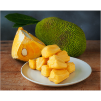 |
| Banana (Musa spp.) | Tolerates scattered cloud cover; enjoys warm temperatures and humidity. | 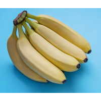 |
| Ginger (Zingiber officinale) | Thrives in warm, partially shaded environments. | 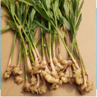 |
| Sapling Name | Description | Image |
|---|---|---|
| Tamarind (Tamarindus indica) | Tolerates partial shade and prefers warm, humid climates. | 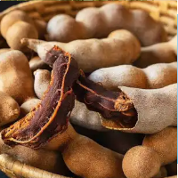 |
| Amla (Phyllanthus emblica) | Does well with indirect sunlight and regular watering. | 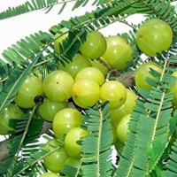 |
| Pomegranate (Punica granatum) | Thrives in well-drained soil and can tolerate some shade. | 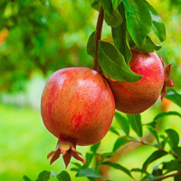 |
| Sapling Name | Description | Image |
|---|---|---|
| Custard Apple (Annona squamosa) | Prefers warm temperatures and can handle partial cloud cover. | 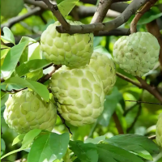 |
| Drumstick (Moringa oleifera) | Grows well in various conditions, including partial sunlight. | 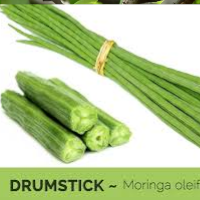 |
| Chikoo (Manilkara zapota) | Thrives in warm, humid conditions with some shade. | 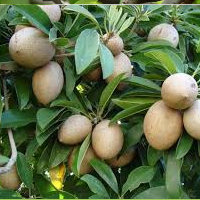 |
| Sapling Name | Description | Image |
|---|---|---|
| Pineapple (Ananas comosus) | Grows well in humid conditions and can tolerate overcast skies. | 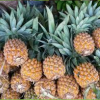 |
| Sweet Potato (Ipomoea batatas) | Thrives in humid environments and does well with cloud cover. | 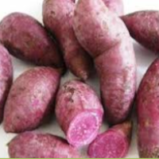 |
| Karela (Momordica charantia) | Can grow in humid, overcast conditions and tolerates partial shade. | 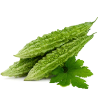 |